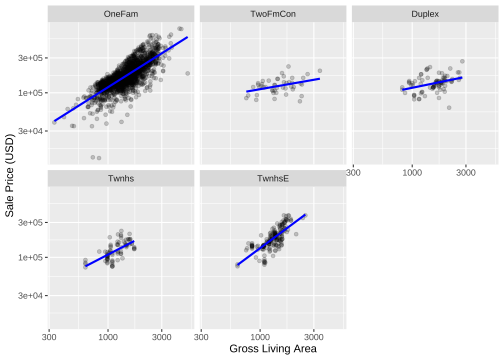

set.seed(101)# To put 60% into training, 20% in validation, and remaining 20% in testing:ames_split<-initial_validation_split(ames, prop =c(0.6, 0.2), strata =Sale_Price)ames_splitames_train<-training(ames_split)ames_test<-testing(ames_split)ames_valid<-validation(ames_split)
# 回归 "numeric" , "conf_int","pred_int","raw".# censored regression "time"，"hazard","survival"# 分类 "class", "prob",# "quantile"# When NULL, predict() will choose an appropriate value based on the model's mode.predict(lm_fit, ames_test)# "numeric"#> # A tibble: 588 × 1#> .pred#> <dbl>#> 1 5.23#> 2 5.29#> 3 5.28#> 4 5.27#> 5 5.26#> 6 5.24#> 7 5.24#> 8 5.24#> 9 5.24#> 10 5.30#> # ℹ 578 more rows
1.4.3 混合效应模型 multilevelmod
Code
library(multilevelmod)multilevel_spec<-linear_reg()%>%set_engine("lmer")multilevel_spec#> Linear Regression Model Specification (regression)#> #> Computational engine: lmerdf<-read_delim("data/lme_anova.txt",)|>pivot_longer(cols =3:7,names_to ="time",values_to ="BP")|>mutate_at(1:3,as.factor)#> Rows: 15 Columns: 7#> ── Column specification ────────────────────────────────────────────────────────#> Delimiter: "\t"#> chr (1): induced_method#> dbl (6): subject, t0, t1, t2, t3, t4#> #> ℹ Use `spec()` to retrieve the full column specification for this data.#> ℹ Specify the column types or set `show_col_types = FALSE` to quiet this message.df#> # A tibble: 75 × 4#> subject induced_method time BP#> <fct> <fct> <fct> <dbl>#> 1 1 A t0 120#> 2 1 A t1 108#> 3 1 A t2 112#> 4 1 A t3 120#> 5 1 A t4 117#> 6 2 A t0 118#> 7 2 A t1 109#> 8 2 A t2 115#> 9 2 A t3 126#> 10 2 A t4 123#> # ℹ 65 more rowsmultilevel_workflow<-workflow()%>%add_variables(outcome =BP, predictors =c(induced_method,time,subject))%>%add_model(multilevel_spec, # This formula is given to the model formula =BP~induced_method+time+(1|subject))multilevel_workflow#> ══ Workflow ════════════════════════════════════════════════════════════════════#> Preprocessor: Variables#> Model: linear_reg()#> #> ── Preprocessor ────────────────────────────────────────────────────────────────#> Outcomes: BP#> Predictors: c(induced_method, time, subject)#> #> ── Model ───────────────────────────────────────────────────────────────────────#> Linear Regression Model Specification (regression)#> #> Computational engine: lmermultilevel_workflow|>fit(data =df)#> ══ Workflow [trained] ══════════════════════════════════════════════════════════#> Preprocessor: Variables#> Model: linear_reg()#> #> ── Preprocessor ────────────────────────────────────────────────────────────────#> Outcomes: BP#> Predictors: c(induced_method, time, subject)#> #> ── Model ───────────────────────────────────────────────────────────────────────#> Linear mixed model fit by REML ['lmerMod']#> Formula: BP ~ induced_method + time + (1 | subject)#> Data: data#> REML criterion at convergence: 431.0591#> Random effects:#> Groups Name Std.Dev.#> subject (Intercept) 3.441 #> Residual 4.434 #> Number of obs: 75, groups: subject, 15#> Fixed Effects:#> (Intercept) induced_methodB induced_methodC timet1 #> 118.360 4.800 8.520 -4.400 #> timet2 timet3 timet4 #> -4.467 9.400 6.067
1.4.4 生存模型 censored
type = "time" type = "survival" type = "linear_pred" type = "quantile" type = "hazard"
Code
library(censored)#> Loading required package: survivalparametric_spec<-survival_reg()parametric_workflow<-workflow()%>%add_variables(outcome =c(fustat, futime), predictors =c(age, rx))%>%add_model(parametric_spec, formula =Surv(futime, fustat)~age+strata(rx))parametric_fit<-fit(parametric_workflow, data =ovarian)parametric_fit#> ══ Workflow [trained] ══════════════════════════════════════════════════════════#> Preprocessor: Variables#> Model: survival_reg()#> #> ── Preprocessor ────────────────────────────────────────────────────────────────#> Outcomes: c(fustat, futime)#> Predictors: c(age, rx)#> #> ── Model ───────────────────────────────────────────────────────────────────────#> Call:#> survival::survreg(formula = Surv(futime, fustat) ~ age + strata(rx), #> data = data, model = TRUE)#> #> Coefficients:#> (Intercept) age #> 12.8734120 -0.1033569 #> #> Scale:#> rx=1 rx=2 #> 0.7695509 0.4703602 #> #> Loglik(model)= -89.4 Loglik(intercept only)= -97.1#> Chisq= 15.36 on 1 degrees of freedom, p= 8.88e-05 #> n= 26
simple_ames<-recipe(Sale_Price~Neighborhood+Gr_Liv_Area+Year_Built+Bldg_Type, data =ames_train)%>%step_log(Gr_Liv_Area, base =10)%>%step_other(Neighborhood, threshold =0.01)%>%step_dummy(all_nominal_predictors())
Code
ggplot(ames_train, aes(x =Gr_Liv_Area, y =10^Sale_Price))+geom_point(alpha =.2)+facet_wrap(~Bldg_Type)+geom_smooth(method =lm, formula =y~x, se =FALSE, color ="blue")+scale_x_log10()+scale_y_log10()+labs(x ="Gross Living Area", y ="Sale Price (USD)")

1.5.2 交互项
step_interact(~ interaction terms) , +分隔不同交互效应
Code
simple_ames<-recipe(Sale_Price~Neighborhood+Gr_Liv_Area+Year_Built+Bldg_Type, data =ames_train)%>%step_log(Gr_Liv_Area, base =10)%>%step_other(Neighborhood, threshold =0.01)%>%step_dummy(all_nominal_predictors())%>%# Gr_Liv_Area is on the log scale from a previous stepstep_interact(~Gr_Liv_Area:starts_with("Bldg_Type_"))simple_ames#> #> ── Recipe ──────────────────────────────────────────────────────────────────────#> #> ── Inputs#> Number of variables by role#> outcome: 1#> predictor: 4#> #> ── Operations#> • Log transformation on: Gr_Liv_Area#> • Collapsing factor levels for: Neighborhood#> • Dummy variables from: all_nominal_predictors()#> • Interactions with: Gr_Liv_Area:starts_with("Bldg_Type_")
1.5.3 样条函数
添加非线性特征
Code
library(patchwork)library(splines)plot_smoother<-function(deg_free){ggplot(ames_train, aes(x =Latitude, y =10^Sale_Price))+geom_point(alpha =.2)+scale_y_log10()+geom_smooth( method =lm, formula =y~ns(x, df =deg_free),# natural splines. color ="lightblue", se =FALSE)+labs(title =paste(deg_free, "Spline Terms"), y ="Sale Price (USD)")}(plot_smoother(1)+plot_smoother(5))/(plot_smoother(20)+plot_smoother(100))
Code
recipe(Sale_Price~Neighborhood+Gr_Liv_Area+Year_Built+Bldg_Type+Latitude, data =ames_train)%>%step_ns(Latitude, deg_free =20)#> #> ── Recipe ──────────────────────────────────────────────────────────────────────#> #> ── Inputs#> Number of variables by role#> outcome: 1#> predictor: 5#> #> ── Operations#> • Natural splines on: Latitude
1.5.4 特征提取
PCA,
Code
# Use a regular expression to capture house size predictors: recipe(Sale_Price~Neighborhood+Gr_Liv_Area+Year_Built+Bldg_Type+Latitude+Total_Bsmt_SF+First_Flr_SF+Gr_Liv_Area, data =ames_train)%>%step_pca(matches("(SF$)|(Gr_Liv)"))#> #> ── Recipe ──────────────────────────────────────────────────────────────────────#> #> ── Inputs#> Number of variables by role#> outcome: 1#> predictor: 7#> #> ── Operations#> • PCA extraction with: matches("(SF$)|(Gr_Liv)")
ggplot(ames_test_res, aes(x =Sale_Price, y =.pred))+# Create a diagonal line:geom_abline(lty =2)+geom_point(alpha =0.5)+labs(y ="Predicted Sale Price (log10)", x ="Sale Price (log10)")+# Scale and size the x- and y-axis uniformly:coord_obs_pred()
1.6.1.1 均方根误差RMSE
Code
rmse(ames_test_res, truth =Sale_Price, estimate =.pred)#> # A tibble: 1 × 3#> .metric .estimator .estimate#> <chr> <chr> <dbl>#> 1 rmse standard 0.0772
1.6.1.2 决定系数R2，平均绝对误差MAE
Code
ames_metrics<-metric_set(rmse, rsq, mae)ames_metrics(ames_test_res, truth =Sale_Price, estimate =.pred)#> # A tibble: 3 × 3#> .metric .estimator .estimate#> <chr> <chr> <dbl>#> 1 rmse standard 0.0772#> 2 rsq standard 0.795 #> 3 mae standard 0.0550
set.seed(101)# To put 60% into training, 20% in validation, and remaining 20% in testing:ames_validation_split<-initial_validation_split(ames, prop =c(0.6, 0.2))ames_validation_split#> <Training/Validation/Testing/Total>#> <1758/586/586/2930># Object used for resampling: val_set<-validation_set(ames_validation_split)val_set#> # A tibble: 1 × 2#> splits id #> <list> <chr> #> 1 <split [1758/586]> validation
Code
val_res<-rf_wflow%>%fit_resamples(resamples =val_set)val_res#> # Resampling results#> # Validation Set (0.75/0.25) #> # A tibble: 1 × 4#> splits id .metrics .notes #> <list> <chr> <list> <list> #> 1 <split [1758/586]> validation <tibble [2 × 4]> <tibble [0 × 3]>collect_metrics(val_res)#> # A tibble: 2 × 6#> .metric .estimator mean n std_err .config #> <chr> <chr> <dbl> <int> <dbl> <chr> #> 1 rmse standard 0.0809 1 NA Preprocessor1_Model1#> 2 rsq standard 0.818 1 NA Preprocessor1_Model1


{kind=link}